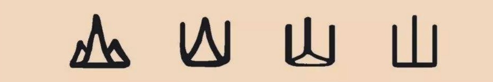
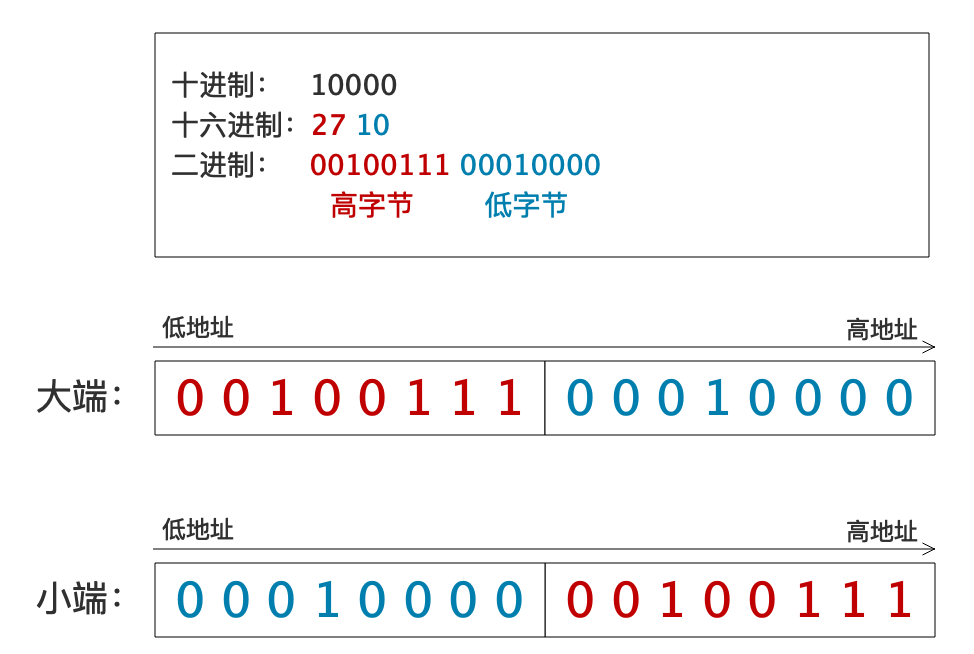

Character Encoding (Part 2): The Character Encoding Model
In the previous article, we saw the chaos of pre-Unicode encodings: ASCII, ISO 8859, GB 2312, Big5, Shift JIS, and dozens of others, all incompatible with each other. To understand how Unicode solved this problem, we first need a clear mental model of what "character encoding" actually means.
The Unicode standard defines a four-layer character encoding model. Each layer has a specific job, and understanding these layers is the key to truly understanding how text works on a computer.
Layer 1: Abstract Character Set
The first layer answers the question: what characters do we need?
An abstract character is a conceptual unit of information used for the organization, control, or representation of textual data. In plain terms, it is a "character" in the way a human thinks about it — not how a computer stores it.
For example, the Latin letter "A" is an abstract character. The Chinese character "中" (middle) is an abstract character. The emoji "😀" (grinning face) is an abstract character. They exist as ideas, independent of any encoding.
The abstract character set (also called the repertoire) is the complete collection of all abstract characters that an encoding system supports. Unicode's repertoire includes over 149,000 characters covering 168 scripts, plus symbols, emoji, and historical scripts.
Key point: at this layer, characters have no numbers, no bytes, no binary representation. They are just an abstract set of conceptual units.

Different visual forms (glyphs) of the same abstract characterLayer 2: Coded Character Set (CCS)
The second layer answers the question: what number do we assign to each character?
A Coded Character Set maps each abstract character to a unique non-negative integer called a code point. This is the step that gives characters a numerical identity.
For example, in Unicode:
- "A" → code point 65 (written as U+0041)
- "中" → code point 20013 (written as U+4E2D)
- "😀" → code point 128512 (written as U+1F600)
The mapping is arbitrary but fixed. Once assigned, a code point never changes its meaning. U+0041 will always mean "Latin Capital Letter A."
Important: a code point is an abstract integer, not a byte sequence. U+0041 means "the integer 65," not "the byte 0x41" or "the bytes 0x00 0x41." How that integer gets turned into bytes is the job of the next layer.
Some people confuse "character set" with "encoding." When someone says "ASCII character set," they usually mean the coded character set: the mapping of characters to code points 0–127. But strictly speaking, a coded character set is only half of an encoding — it tells you what numbers to use, but not how to store those numbers as bytes.
Layer 3: Character Encoding Form (CEF)
The third layer answers the question: how do we turn code points into code units?
A Character Encoding Form maps each code point to a sequence of code units. A code unit is the basic unit of data used by the encoding — typically 8 bits (a byte), 16 bits, or 32 bits.
This is where the three famous Unicode encoding forms come in:
UTF-32
The simplest encoding form. Every code point is represented by exactly one 32-bit code unit. Code point U+0041 becomes the 32-bit value 0x00000041. Code point U+1F600 becomes 0x0001F600.
UTF-32 is a fixed-width encoding: every character is exactly 4 bytes. This makes it easy to index into a string (the nth character is always at offset n×4), but it wastes a lot of space because most characters have code points well below 0x10000.
UTF-16
UTF-16 uses 16-bit code units. Code points in the Basic Multilingual Plane (BMP, U+0000 to U+FFFF) are encoded as a single 16-bit code unit. Code points above U+FFFF (the supplementary planes) are encoded as a surrogate pair: two 16-bit code units.
For example:
- U+0041 ("A") → one code unit: 0x0041
- U+4E2D ("中") → one code unit: 0x4E2D
- U+1F600 ("😀") → two code units: 0xD83D 0xDE00 (a surrogate pair)
UTF-16 is a variable-width encoding: characters are either 2 or 4 bytes.
UTF-8
UTF-8 uses 8-bit code units (bytes). Code points are encoded using one to four bytes:
- U+0000 to U+007F (ASCII) → 1 byte
- U+0080 to U+07FF → 2 bytes
- U+0800 to U+FFFF → 3 bytes
- U+10000 to U+10FFFF → 4 bytes
For example:
- U+0041 ("A") → 1 byte: 0x41
- U+4E2D ("中") → 3 bytes: 0xE4 0xB8 0xAD
- U+1F600 ("😀") → 4 bytes: 0xF0 0x9F 0x98 0x80
UTF-8 is also variable-width, but it has a crucial advantage: ASCII characters (0–127) are encoded as single bytes identical to ASCII. This means any ASCII text is automatically valid UTF-8, and any UTF-8 parser can safely read ASCII portions without knowing the full encoding.
The encoding form is where the actual "encoding" happens. The coded character set (Layer 2) gives each character a number; the encoding form (Layer 3) turns that number into a sequence of code units.
Layer 4: Character Encoding Scheme (CES)
The fourth layer answers the question: how do we serialize code units into a byte stream?
A Character Encoding Scheme defines how code units are mapped to a sequence of bytes for storage or transmission. This might seem redundant — after all, code units are already measured in bits — but there is a subtle issue: byte order.
When a code unit is larger than one byte (like UTF-16's 16-bit units or UTF-32's 32-bit units), you need to decide which byte comes first in the byte stream:
- Big-endian (BE): the most significant byte comes first. Code unit 0x4E2D is stored as bytes 0x4E 0x2D.
- Little-endian (LE): the least significant byte comes first. Code unit 0x4E2D is stored as bytes 0x2D 0x4E.
Different CPU architectures prefer different byte orders. x86 processors are little-endian; many network protocols are big-endian. Without a way to distinguish, a reader cannot know which byte order was used.

Big-endian storage order matches human reading orderThe solution is the Byte Order Mark (BOM): a special code point U+FEFF placed at the beginning of the text. If the reader sees 0xFE 0xFF, they know the text is big-endian. If they see 0xFF 0xFE, it is little-endian. (The code point U+FFFE is guaranteed not to be a valid character, so there is no ambiguity.)
For UTF-8, byte order is not an issue because each code unit is a single byte. However, a UTF-8 BOM (the byte sequence 0xEF 0xBB 0xBF) is sometimes used to signal that the text is UTF-8 rather than some other 8-bit encoding.
The encoding scheme layer also handles other serialization concerns, such as:
- How to handle byte streams that are truncated in the middle of a multi-byte character.
- How to encode the text for transmission over protocols that expect certain byte patterns (e.g., MIME encoding for email).
Putting It All Together
Let's trace the full journey of the Chinese character "中" (middle) through all four layers:
- Abstract Character Set: "中" is an abstract character representing the concept of "middle" or "center" in Chinese.
- Coded Character Set (CCS): Unicode assigns it code point U+4E2D (decimal 20013).
- Character Encoding Form (CEF):
- In UTF-8: code point 0x4E2D becomes three bytes: 0xE4 0xB8 0xAD.
- In UTF-16: code point 0x4E2D becomes one 16-bit code unit: 0x4E2D.
- In UTF-32: code point 0x4E2D becomes one 32-bit code unit: 0x00004E2D.
- Character Encoding Scheme (CES):
- In UTF-8: the bytes are 0xE4 0xB8 0xAD (no byte order issue).
- In UTF-16 BE: the bytes are 0x4E 0x2D.
- In UTF-16 LE: the bytes are 0x2D 0x4E.
- In UTF-32 BE: the bytes are 0x00 0x00 0x4E 0x2D.
Each layer has a clear, well-defined responsibility. The abstract character set defines what we encode. The coded character set assigns numbers. The encoding form turns numbers into code units. The encoding scheme turns code units into bytes.
Why This Model Matters
Understanding this four-layer model helps you reason about encoding problems:
- Mojibake (garbled text) usually happens when the reader uses the wrong encoding form or scheme. The bytes are correct, but the interpretation is wrong.
- "UTF-8 vs. UTF-16" is a question about Layer 3 (encoding form), not Layer 2 (coded character set). Both use the same Unicode code points; they just serialize them differently.
- "Does UTF-8 have a BOM?" is a question about Layer 4 (encoding scheme). UTF-8 does not need a BOM for byte order, but a BOM can be used to signal the encoding.
- "Why is my emoji broken?" might be a Layer 3 issue (the encoding form does not support supplementary planes) or a Layer 2 issue (the code point was assigned in a later version of Unicode).
In the next article, we will dive into Unicode itself: its history, its design, and the encoding forms that made it the universal standard we rely on today.